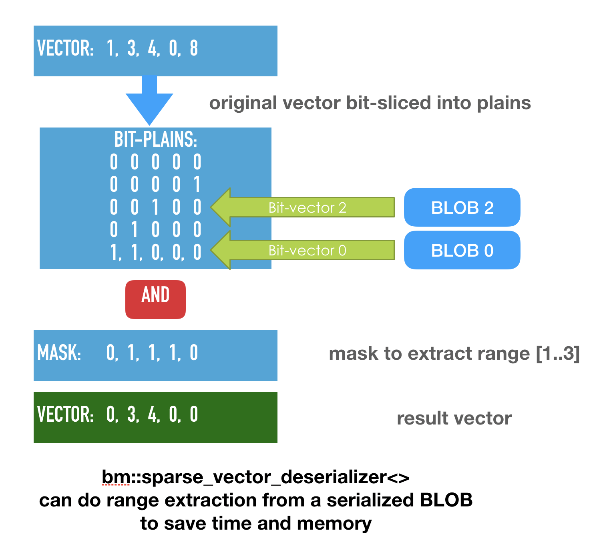

Version 5.2.0
Oct 15, 2019Release Notes
- New version implements selective deserialization of sparse vectors. More about this new feature in the technical application notes below.
Application notes on selective deserialization
Selective deserialization means that you can define elements you need to extract from the BLOB. Selected elements are going to be present in the sparse vector, all others not.
Use cases
- Paging algorithm when you only need a certain range of indexes (range selection). Range deserialization schemes can be very useful for situations of memory pressure for example WebAssembly where you only have 2GBs of addressable RAM per WebAssembly instance and may be pressed to keep your vectors fully compressed.
- Gather deserialization. Typically it is part of a bigger scheme when we run a search first, know the exact elements which we will need for retrieval (search and retrieval scenario).
 Bit-vector deserialization in BitMagic implements transparent logical operations between a bit-vector and a serialized BLOB. In this case the operation to apply is AND which will mask off all bits (and blocks of bits) outside of requested range or set of ranges. Since all bit-vectors are sparse, the empty blocks will not be materialized, reducing memory consumption.
Performance wise BitMagic will also be able to avoid decoding of at least some blocks outside of the declared target. In version 5.2.0 BitMagic cannot skip blocks decode from the start but it can stop deserialization early, when AND operation detects that there is nothing else to do downstream. If requested range happens to be closer to the beginning of a vector, selective deserialization wins in both memory and speed. In future versions this performance aspect will be improved.
BitMagic v.5.2.0 support 3 types of bit-transposed succinct sparse vectors.
bm::sparse_vector<>- sparse vector template for integer types-
bm::str_sparse_vector<>- sparse vector template for ASCIIz strings -
bm::rsc_sparse_vector<>- succinct sparse vector for integer types with rank-select compression of NULL values
All 3 sparse vectors support range and gather deserialization using AND masking. While it is rather straight forward to implement for first two cases, Rank-Select compressed vector requires recalculation of a mask into compressed coordinates which makes gather operation a bit more expensive. Current performance is practical but leaves some room for later optimizations.